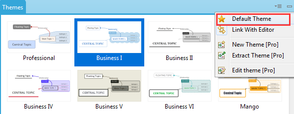

Default Theme
For XMind, theme controls all attributes of one mind map, such as Background color, Wallpaper, Text font/color/size, line, and etc. By this way, we can easily change the whole style of one mind map by changing its theme. And XMind offers multiple well-designed themes for you. If you like one of them, please set it as "Default theme" with just a simple click on the theme view toolbar.

If you are using XMind Pro, you can even design your own theme, save it for further usage or set it as default theme. Please refer to the theme part.